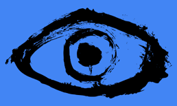

|  |
Eye-Bit Project Documentation
|
| ▼NEye-Bit Project | |
| NBlinking_count | |
| ▼Ncalibration | |
| CCalibration | This class calibrates the pupil detection algorithm by finding the best binarization threshold value for the person and the webcam |
| NcolibrationWithCV | |
| ▼Neye | |
| CEye | This class creates a new frame to isolate the eye and initiates the pupil detection |
| ▼Ngaze_tracking | |
| CGazeTracking | This class tracks the user's gaze |
| ▼NInterface | |
| CInterface | This class is creating GUI for an interaction with a gaze tracker |
| Nlistener | |
| ▼Npupil | |
| CPupil | This class detects the iris of an eye and estimates the position of the pupil |
| Nstart_ros | |
| NTrecker_with6acord |